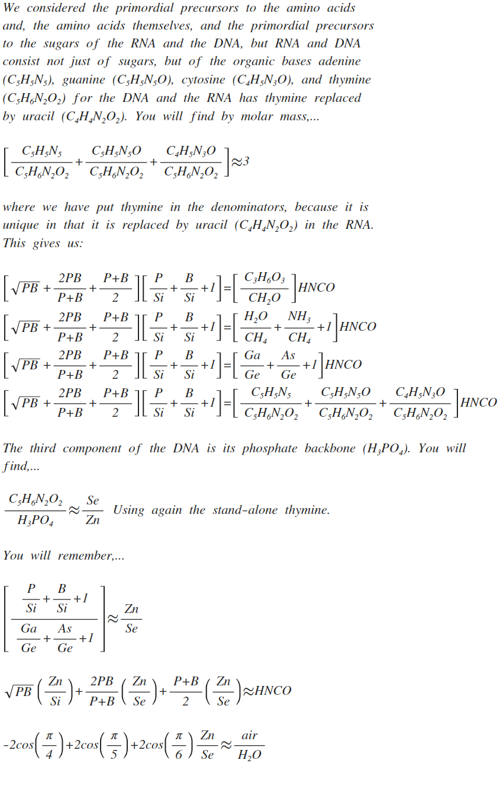
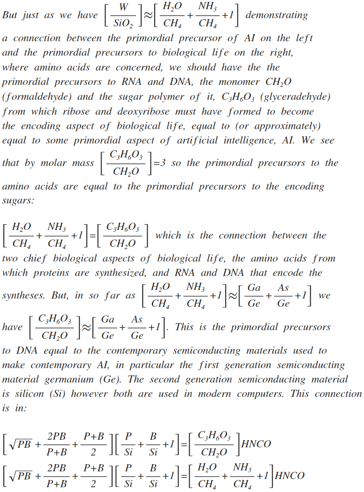

The Author of this site is thinking of adding a discussion forum to it. Things to discuss:
How Did Life Get Started?
Discuss the origins of DNA, RNA, and protein synthesis. Discuss the Miller-Urey experiment.
The Production of Carbon
In order to have biological life we need to have carbon. Discuss carbon synthesis in stars The Hoyle State,...etc.
AI
Discuss whether you think self-aware AI can be made, The Turing test, deep learning, neural networks, Rosenblatt's Perceptron,...etc.
AI and the Biological
Is there a common structure between the two? Can we understand the origins of biological life by looking at AI?